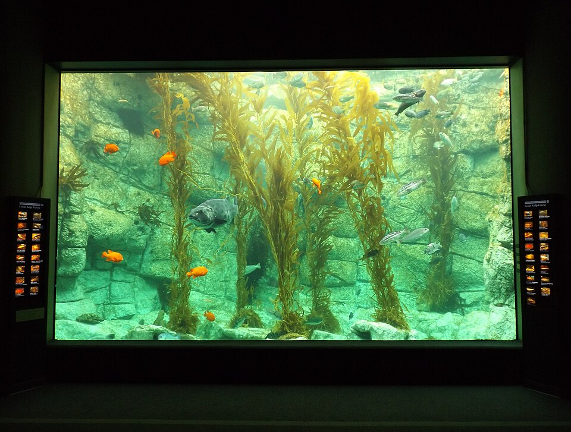

TRIP OVERVIEW
Day 1 – La Jolla Cove · Children's Pool · Birch Aquarium at Scripps · Torrey Pines State Natural Reserve
Day 1
La Jolla Cove · Children's Pool · Birch Aquarium at Scripps · Torrey Pines State Natural Reserve
🏨 From Hotel: 🚶 4 min · 🚕 3 min → La Jolla Cove
1. La Jolla Cove
↳ A sheltered cove carved into Cretaceous sandstone — the ecological heart of the San Diego–La Jolla Underwater Park. The marine reserve protects Garibaldi, California sea lions, leopard sharks, and bat rays. Seven sea caves open into the headland; Sunny Jim Cave was hand-dug in 1902 by professor Gustav Schulz.

🚶 10 min · 🚕 3 min → Children's Pool
2. Children's Pool
↳ A pocket beach enclosed by a concrete breakwater built in 1931, funded by Ellen Browning Scripps. Since the mid-1990s a colony of 200 harbor seals hauls out here year-round to rest and nurse pups. A rope barrier runs Dec 15 through May 15 for pupping; seawall viewpoint stays open all year.
🏛️ Open 24/7
⏰ ~45 min
⚠️ Beach access restricted Dec 15 - May 15 during harbor seal pupping season — seawall path viewpoint open year-round

🚕 5 min → Birch Aquarium at Scripps
3. Birch Aquarium at Scripps
↳ The public outreach center of Scripps Institution of Oceanography at UC San Diego. The centerpiece is a two-story 70,000-gallon kelp forest tank — leopard sharks, garibaldi, moray eels, barracuda, and giant sea bass moving through the fronds. Over 3,000 animals across 380 species.
🏛️ Daily 9:00am - 5:00pm
⏰ ~1 hr 30 min
⚠️ Timed-entry sells out on summer weekends — book in advance

🚕 13 min → Torrey Pines State Natural Reserve
4. Torrey Pines State Natural Reserve
↳ A 2,000-acre coastal reserve on sandstone bluffs 300 feet above the Pacific — the only place on Earth outside Santa Rosa Island where Pinus torreyana grows wild. Fewer than 9,000 Torrey pines exist, making it the rarest pine in North America. Eight miles of trails run to cliff-edge overlooks above the Pacific.
🏛️ Daily 7:15am - 8:00pm
⏰ ~2 hr
⚠️ Vehicle day-use fee required. Upper trailhead parking fills by 10:00am on weekends — arrive before 8:30am or use rideshare to the trailhead

🚕 15 min → hotel
🗓️ Weekly Closures
No notable city-wide weekly closures in La Jolla.
📅 Tours
Viator
↳ Guided snorkel tour inside the Ecological Reserve. Guides lead the group past sea cave entrances where leopard sharks rest on sandy bottoms and Garibaldi dart through kelp. Full dive gear and wetsuit provided.
🕐 9:00am · ⏳ 75 min · 👥 Small group
🚶 4 min · 🚕 3 min
📅 2. La Jolla Cove Guided Snorkeling Tour with Sea Lions and Sea Caves · Viator · 5.0⭐ · 11+ reviews
↳ Small-group 90-minute snorkel tour at the Cove focused on close sea-lion encounters and cave exploration. All gear provided; guides certified in open-water safety. Group kept small for a personal experience.
🕐 9:00am · ⏳ 90 min · 👥 Small group
🚶 4 min · 🚕 3 min
↳ 2-hour guided walk through the Village covering architectural, cultural, and natural history — from Ellen Browning Scripps's legacy to the founding of Scripps Institution of Oceanography. Small groups; guide takes questions throughout.
🕐 10:00am · ⏳ 2 hr · 👥 Small group
🚶 2 min · 🚕 2 min
☕ Cappuccino
Better Buzz Coffee · 4.3⭐ · 680+ reviews
Brick & Bell Café · 4.4⭐ · 724+ reviews
Living Room Coffeehouse · 4.0⭐ · 209+ reviews
Elixir Espresso & Wine Bar · 4.2⭐ · 274+ reviews
🫕 Restaurants Near Hotel
George's at the Cove · 4.4⭐ · 4720+ reviews
↳ California. Three-level landmark above the Cove; rooftop terrace for lunch.
🏛️ Daily 11:00am - 9:00pm
🚶 2 min · 🚕 2 min
NINE-TEN · 4.5⭐ · 864+ reviews
↳ California farm-to-table. Daily market menu inside the Grande Colonial Hotel.
🏛️ Daily 7:00am - 10:00pm
🚶 4 min · 🚕 2 min
Puesto La Jolla · 4.4⭐ · 3967+ reviews
↳ Mexican. Baja-inspired tacos and margaritas with California produce.
🏛️ Monday - Thursday 11:00am - 9:00pm · Friday - Saturday 11:00am - 10:00pm · Sunday 11:00am - 9:00pm
🚶 8 min · 🚕 3 min
The Cottage La Jolla · 4.4⭐ · 2800+ reviews
↳ American brunch. Casual cottage patio; beloved morning spot in the Village.
🏛️ Daily 7:30am - 3:00pm
🚶 9 min · 🚕 4 min
Piazza 1909 · 4.5⭐ · 583+ reviews
↳ Italian. Handmade pasta and pizza in a converted beach house; fresh daily pasta.
🏛️ Tuesday - Friday 4:30pm - 9:00pm · Saturday - Sunday 4:00pm - 9:00pm
🚫 Closed Monday
🚶 13 min · 🚕 5 min
🍽️ Downtown Restaurants
Whisknladle · 4.3⭐ · 1200+ reviews
↳ California bistro. Known for charcuterie and wood-fire cooking; seasonal menu.
🏛️ Daily 11:00am - 9:00pm
Brockton Villa · 4.3⭐ · 1800+ reviews
↳ American café. 1894 cottage above the Cove; top ocean-view breakfast spot.
🏛️ Daily 8:00am - 3:00pm
Catania · 4.2⭐ · 1407+ reviews
↳ Coastal Italian. Rooftop on Girard; housemade pasta and wood-oven pizza.
🏛️ Monday - Friday 4:00pm - 9:00pm · Saturday - Sunday 11:30am - 9:00pm
Zenbu Sushi Bar & Restaurant · 4.4⭐ · 1100+ reviews
↳ Japanese sushi. Local institution; high-quality nigiri and rolls.
🏛️ Monday - Saturday 11:30am - 10:30pm · Sunday 12:00pm - 10:30pm
Cusp Dining & Drinks · 4.2⭐ · 1600+ reviews
↳ California contemporary. Rooftop with ocean views atop Hotel La Jolla.
🏛️ Daily 7:00am - 9:00pm
🍮 Local Tastes
Fish Tacos
↳ The defining food of coastal San Diego — grilled or battered white fish in a corn tortilla with shredded cabbage and crema. Rubio's, opened in San Diego in 1983, is credited with popularizing the Baja-style fish taco nationally.
Poke Bowls
↳ Hawaiian raw-fish bowls became a San Diego staple alongside the city's Pacific Rim identity. Tuna, salmon, and yellowtail — from the same boats supplying local sushi restaurants — served over rice with sesame, avocado, and house sauces.
Açaí Bowls
↳ A Southern California beach-town staple — blended frozen açaí topped with granola, fresh fruit, honey, and coconut. Every surf-adjacent neighborhood in San Diego has a dedicated açaí spot; La Jolla Shores has several.
In-N-Out Burger
↳ California's most iconic fast-food chain, founded in 1948. Minimal menu — burgers, fries, shakes — but the cult is enormous. The off-menu "Animal Style" with mustard-cooked patty, extra spread, and grilled onions is the move.
🎭 Shows, Performances & Concerts
No exceptional shows, performances, or concerts in La Jolla.
🚆 Train Stations Near Hotel
No train stations in La Jolla.
⛲️ Day Trips by Train
No day trips from La Jolla.
🏓 Pickleball
La Jolla Recreation Center · Outdoor
↳ Two outdoor courts first-come, first-served; one block from La Valencia.
🏛️ Daily 8:00am - 10:00pm
🚶 4 min · 🚕 2 min
Dan McKinney Family YMCA · Indoor
↳ Four courts — two indoors, two outdoors. Indoor courts are climate-controlled.
🏛️ Monday - Friday 5:00am - 10:00pm · Saturday - Sunday 7:00am - 7:00pm
🚕 8 min
⭐ Michelin Restaurants
No Michelin-starred restaurants in La Jolla.